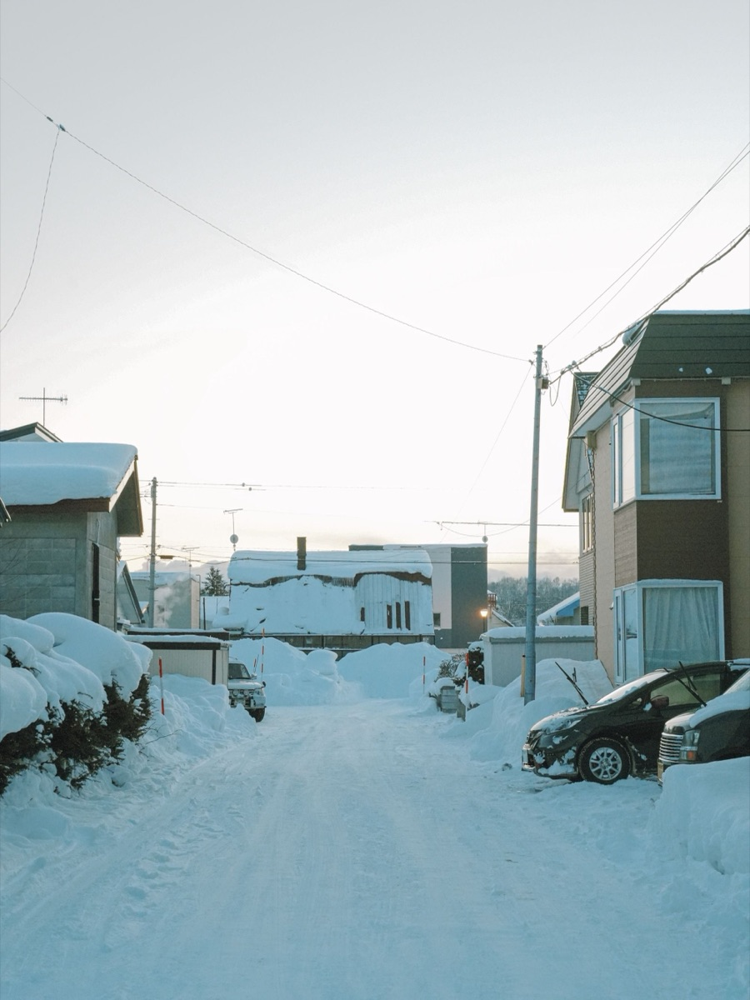

Asahikawa
旭川市の訪問診療・在宅医療
JR旭川駅近く5条通の訪問診療専門クリニックです。市内全域のご自宅と施設へ、医師が定期訪問します。

旭川市は当院の中心エリアです。市内全域のご自宅と施設について、訪問診療のご相談をいただけます。クリニックは5条通6丁目にあり、JR旭川駅から歩いていける距離です。
- 定期訪問は月2回程度が目安です（病状により調整します）
- 神楽・神居・末広・東光・永山・忠和・春光・豊岡・緑が丘・東旭川・西神楽など市内全域をご相談いただけます
- 積雪期も訪問を続けます。玄関前の除雪にご協力をお願いしています
- 市内の有料老人ホーム・グループホーム・障がい者施設への訪問にも対応します
- 近郊の鷹栖・東神楽・当麻・比布・愛別・東川・美瑛・上川は個別にご相談ください
Coverage
旭川市内の対応範囲
市内全域をご相談いただけます。地区による区別は設けていません。
旭川市内であれば、市街地・郊外を問わず訪問診療のご相談をいただけます。具体的には、神楽、神居、末広、東光、永山、忠和、春光、豊岡、緑が丘、東旭川、西神楽といった地区が含まれますが、ここに挙げていない地区でも同様です。クリニックは市の中心部（5条通6丁目）にあります。訪問の時刻や頻度、実際に伺えるかどうかは、ご住所（地区まで）と現在の状況をうかがったうえで個別にご案内します。
ただし、市内であっても、次のような場合は訪問の体制を個別に組み立てます。ひとつは、郊外で冬季に道路事情が大きく変わる地区の場合です。もうひとつは、医療処置の内容が多く、短い間隔での訪問が必要になる場合です。いずれも「伺えない」という意味ではなく、訪問の時刻や頻度、訪問看護との組み合わせを調整させていただくという意味です。
旭川市でご相談が多い方
- 足腰が弱くなり、ご家族の付き添いがないと通院できなくなった方
- 認知症が進み、待合室で長く待つことが難しくなった方
- 退院後、自宅での療養に不安がある方
- 心不全や呼吸器の病気があり、冬の外出そのものが負担になっている方
- ご家族が市外・道外にお住まいで、日常の見守りが難しい方
訪問診療の対象になるかどうかは、年齢や病名だけで決まるものではありません。詳しくは訪問診療とは（対象・診療内容・往診との違い）をご覧ください。
Nearby towns
旭川近郊の町について
旭川市に接する町については、個別にご相談を承ります。
| 町 | 区分 | ご相談にあたって確認すること |
|---|---|---|
| 鷹栖町 | 個別相談 | 市街地からの距離と、冬季の道路状況を確認します。 |
| 東神楽町 | 個別相談 | 地区によって移動時間が変わるため、住所を地区まで伺います。 |
| 当麻町 | 個別相談 | 地域の訪問看護・薬局との連携が組めるかを確認します。 |
| 比布町 | 個別相談 | 病状の安定度と、必要な訪問の間隔を確認します。 |
| 愛別町 | 個別相談 | 冬季の移動時間を見込んだうえで判断します。 |
| 東川町 | 個別相談 | 郊外の場合、除雪の入り方を含めて確認します。 |
| 美瑛町 | 個別相談 | 丘陵地のため、冬季の経路をあわせて確認します。 |
| 上川町 | 個別相談 | 距離があるため、オンライン診療の併用も含めてご相談します。 |
※ 「個別相談」は伺えないという意味ではありません。ご住所・病状・道路状況・診療体制をふまえて一件ずつ判断します。「必ず伺います」というお約束はいたしかねます。上川管内のその他の市町村については上川・道北エリアの訪問診療をご覧ください。
Winter
冬季（積雪期）の訪問について
旭川の冬は、通院そのものが大きな負担になります。訪問診療はその負担を引き受ける医療です。
冬の通院がどれだけ負担か
旭川では、12月から3月にかけて路面が雪と氷に覆われます。玄関から車までの数メートルでさえ、高齢の方にとっては転倒の危険がある距離です。病院の駐車場から玄関までの移動、待合室での待ち時間、帰りの渋滞まで含めると、外来受診は半日がかりになることも珍しくありません。付き添うご家族も仕事を休む必要があります。
訪問診療に切り替えると、この移動が丸ごとなくなります。「冬の間だけでも訪問にできないか」というご相談も承っています。
当院の冬季の訪問体制
積雪期も訪問を続けます。ただし、大雪や吹雪で道路の通行が難しい日は、安全を優先して訪問の時刻をずらす、または日程を変更させていただくことがあります。変更が必要な場合は、あらかじめお電話でご連絡します。

玄関前の除雪にご協力ください
医師とスタッフは、診療かばんや医療機器、書類を持って伺います。玄関前の通路と、車を停めるスペースの除雪をお願いできると助かります。日中に除雪が難しいご家庭は、その旨をお知らせください。訪問の時刻を調整したり、玄関以外の出入り口を使わせていただいたりするなど、方法を一緒に考えます。
悪天候のときのご連絡
暴風雪警報が出るような日は、道路の状況が短時間で変わります。訪問の予定を変更する場合は当院からお電話しますので、日中に連絡がつく番号をお知らせください。逆に、道路が塞がって車が入れないなど、そちらでお気づきのことがあれば、遠慮なくお知らせください。
停電への備えも、冬の在宅療養では大切です。在宅酸素や電動ベッド、吸引器などをお使いの場合は、停電時にどう対応するかを事前に確認しておきます。詳しくは北海道の冬と通院の負担についてのコラムもあわせてご覧ください。
旭川市内の施設への訪問診療
旭川市内の有料老人ホーム、認知症対応型グループホーム、サービス付き高齢者向け住宅、障がい者支援施設への訪問診療に対応しています。入居者さまが通院のたびに職員さまの付き添いを必要とする状況は、施設運営にとっても大きな負担です。訪問診療に切り替えることで、その時間を施設内のケアに戻すことができます。
導入は、Phase A 導入準備、Phase B 初回訪問・立ち上げ、Phase C 安定運用の3つに分けて進めます。契約と同意、患者情報の整備、連絡ルールの取り決めを先に済ませてから開始するため、開始直後の混乱を抑えられます。夜間の連絡フロー、採血の運用、書類の依頼経路も、導入時に取り決めます。
協力医療機関の変更を検討されている施設さまからのご相談も承ります。詳しくは施設への訪問診療導入（協力医療機関のご相談）をご覧ください。
画像検査・入院が必要になったとき
当院は訪問診療を専門とするクリニックのため、レントゲンやCT、心電図など機器を要する検査は行っていません。必要と判断した場合は、近隣の基幹病院や検査施設へ受診の調整またはご紹介を行います。入院が必要な場合も同じく、後方の医療機関へご紹介します。
採血は療養先で行い、検体は外部の検査機関へ提出します。結果は当院で確認し、必要な内容をご本人・ご家族、関係する事業所へお伝えします。緊急を要する値が出た場合の連絡方法は、開始時に取り決めておきます。
なお、緊急性が高いと判断した場合は、検査の結果を待たずに救急要請を行います。呼びかけに反応しない、息が苦しい、突然ろれつが回らない、強い胸の痛みがあるといった場合は、当院へのご連絡より119番を優先してください。
旭川市の在宅医療・介護の相談窓口
訪問診療を始めるかどうか迷っている段階では、地域の相談窓口を利用する方法もあります。旭川市には、高齢の方の生活・介護・医療の相談を受ける公的な窓口があります。
- 地域包括支援センター：市内を区域ごとに分けて設置されている総合相談窓口です。介護保険の申請、ケアマネジャーの紹介、在宅で使えるサービスの相談ができます。お住まいの地区を担当するセンターは、旭川市の窓口でご確認いただけます。
- 旭川市（高齢者・介護の担当窓口）：介護保険の要介護認定、各種の助成制度についての窓口です。
- 旭川市医師会：市内の医療機関に関する情報を扱っています。
- 担当のケアマネジャー：すでに介護保険サービスを利用されている場合は、担当のケアマネジャーが最も身近な相談先です。訪問診療の導入についても相談できます。
旭川市の公式サイトは https://www.city.asahikawa.hokkaido.jp/ です。窓口の所在地や連絡先は、市の公式サイトでご確認ください。
当院へ直接ご相談いただくこともできます。「訪問診療の対象になるのかどうか分からない」という段階でも構いません。ご住所と現在の状況をお聞かせいただければ、対応できるかどうかをご案内します。
クリニックへのアクセス
リーベクリニックは、〒070-0035 北海道旭川市5条通6丁目4-59 第一五条ビル1階にあります。JR旭川駅から徒歩圏内です。訪問診療専門のクリニックのため、外来診療は行っておりませんが、ご契約前の面談などでお越しいただくことがあります。地図と経路はアクセスのページをご覧ください。
※ 本ページの内容は一般的な説明であり、個別の診断・治療方針を示すものではありません。FAQ
旭川市の方からよくいただくご質問
旭川市内であれば、どの地区でも訪問診療をお願いできますか？
旭川市は当院の中心エリアですので、市内全域をご相談いただけます。神楽、神居、末広、東光、永山、忠和、春光、豊岡、緑が丘、東旭川、西神楽など、市街地から郊外まで対象になります。ただし、郊外で冬季に道路が使いにくくなる地区や、医療処置の内容によっては、訪問の頻度や体制を調整させていただくことがあります。まずはご住所と現在の状況をお電話でお聞かせください。
冬の大雪の日でも訪問してもらえますか？
積雪期も訪問を続けますが、大雪や吹雪で道路の通行が難しい日は、安全を優先して訪問の時刻をずらす、または日程を変更させていただくことがあります。その場合は、あらかじめお電話でご連絡します。体調の変化があるときは、訪問日でなくてもお電話でご相談いただけます。夜間・休日についても電話でご相談いただけるオンコール体制をとっています。
訪問の前に、家族が準備しておくことはありますか？
冬季は、玄関前と車を停める場所の除雪にご協力をお願いしています。医療機器や書類を持って伺うため、足元が滑りやすいと転倒の危険があります。そのほかは、お薬手帳と現在の内服薬、他の医療機関の紹介状や検査結果、介護保険の被保険者証がお手元にあると、初回の診察がスムーズです。特別な部屋の準備は必要ありません。
旭川近郊の東神楽町や東川町でもお願いできますか？
旭川近郊の鷹栖町、東神楽町、当麻町、比布町、愛別町、東川町、美瑛町、上川町については、個別にご相談いただけます。ご住所（地区まで）、病状、冬季の道路状況、地域の訪問看護や薬局との連携が組めるかどうかをふまえて、伺えるかどうかを判断します。「必ず伺います」というお約束はいたしかねますが、地図上の距離だけで諦めずにご連絡ください。
旭川市内の有料老人ホームやグループホームにも来てもらえますか？
旭川市内の有料老人ホーム、認知症対応型グループホーム、サービス付き高齢者向け住宅、障がい者支援施設への訪問診療に対応しています。協力医療機関をお探しの施設さまは、導入準備・初回訪問・安定運用の3つのフェーズに分けて進めます。施設側と当院側の役割分担、夜間の連絡フロー、書類の依頼経路については、施設・法人の方へのページで詳しくご説明しています。